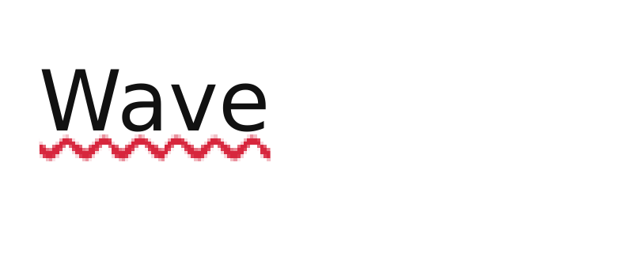
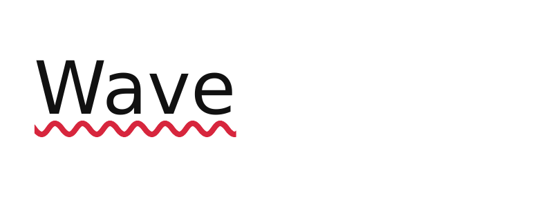

REFERENCE-DISPUTED 5332 px · above-floor 2.05% · raw 2.05% max-page diff inline-text-text-decoration-wavy · text-decoration-wavy · REFERENCE DISPUTEDMissingmissing 21.9%extra 9.4%ΔE 12.5


why: candidate lacks paint present in reference (21.9%)
A large underlined word requests a red wavy underline instead of the default solid rule. Catches: Painting every decoration as a straight solid line passes simple underline tests but misses style geometry. The exact Chrome waveform is retained as compatibility evidence, not a required curve.
reference dispute: CSS Text Decoration 4 section 2.2 requires only a wavy line, not Chrome's wavelength, amplitude, or jagged curve; Ironpress and WeasyPrint render different smooth waves.
regions (199 total; showing 64 representatives)
Complete dominant-class aggregates
| class | regions | pixels | union bbox (CSS px) | largest px | maximum magnitude |
|---|---|---|---|---|---|
| Missing | 19 | 2870 | 0,27 → 93,37 | 282 | total 8.4% · largest 0.8% |
| ColorErr | 161 | 1403 | 0,28 → 93,36 | 128 | total 4.1% · largest 0.4% · max ΔE 45.3 |
| Extra | 19 | 1059 | 0,28 → 89,36 | 157 | total 3.1% · largest 0.5% |
Representative region details (worst-first)
| class | bbox (CSS px) | area% | magnitude | reason |
|---|---|---|---|---|
| Missing | 29,31 → 38,37 | 0.8 | candidate lacks paint present in reference (0.8%) | |
| Missing | 45,31 → 52,37 | 0.8 | candidate lacks paint present in reference (0.8%) | |
| Missing | 59,31 → 68,37 | 0.8 | candidate lacks paint present in reference (0.8%) | |
| Missing | 51,27 → 59,33 | 0.7 | candidate lacks paint present in reference (0.7%) | |
| Missing | 15,31 → 25,37 | 0.7 | candidate lacks paint present in reference (0.7%) | |
| Missing | 37,27 → 45,32 | 0.7 | candidate lacks paint present in reference (0.7%) | |
| Missing | 24,27 → 31,33 | 0.7 | candidate lacks paint present in reference (0.7%) | |
| Missing | 72,31 → 83,37 | 0.6 | candidate lacks paint present in reference (0.6%) | |
| Missing | 0,31 → 11,37 | 0.6 | candidate lacks paint present in reference (0.6%) | |
| Missing | 66,27 → 72,33 | 0.5 | candidate lacks paint present in reference (0.5%) | |
| Missing | 10,27 → 17,33 | 0.5 | candidate lacks paint present in reference (0.5%) | |
| Extra | 52,31 → 58,36 | 0.5 | candidate adds paint absent from reference (0.5%) | |
| Missing | 79,27 → 89,33 | 0.4 | candidate lacks paint present in reference (0.4%) | |
| Extra | 39,32 → 44,36 | 0.4 | candidate adds paint absent from reference (0.4%) | |
| Extra | 31,28 → 37,32 | 0.4 | candidate adds paint absent from reference (0.4%) | |
| Extra | 45,28 → 51,32 | 0.4 | candidate adds paint absent from reference (0.4%) | |
| Extra | 25,31 → 29,36 | 0.4 | candidate adds paint absent from reference (0.4%) | |
| ColorValue | 12,31 → 18,36 | 0.4 | ΔE 5.0 ΔRGB(-11,-61,-54) | fill recolour ΔRGB(-11,-61,-54) (ΔE 5.0) |
| ColorValue | 58,28 → 66,33 | 0.3 | ΔE 1.5 ΔRGB(-15,-79,-70) | fill recolour ΔRGB(-15,-79,-70) (ΔE 1.5) |
| Extra | 60,28 → 65,32 | 0.3 | candidate adds paint absent from reference (0.3%) | |
| Extra | 18,28 → 22,32 | 0.2 | candidate adds paint absent from reference (0.2%) | |
| AntialiasCoverage | 72,28 → 76,31 | 0.2 | ΔRGB(-3,-26,-22) | antialiasing coverage residue on a shared outline |
| ColorValue | 68,30 → 70,34 | 0.2 | ΔE 45.3 ΔRGB(-13,-75,-67) | fill recolour ΔRGB(-13,-75,-67) (ΔE 45.3) |
| Extra | 68,31 → 72,36 | 0.2 | candidate adds paint absent from reference (0.2%) | |
| ColorValue | 37,30 → 40,34 | 0.2 | ΔE 45.3 ΔRGB(-13,-75,-67) | fill recolour ΔRGB(-13,-75,-67) (ΔE 45.3) |
| ColorValue | 43,31 → 45,35 | 0.2 | ΔE 5.0 ΔRGB(-11,-61,-54) | fill recolour ΔRGB(-11,-61,-54) (ΔE 5.0) |
| Missing | 0,28 → 4,33 | 0.1 | candidate lacks paint present in reference (0.1%) | |
| Missing | 90,35 → 93,37 | 0.1 | candidate lacks paint present in reference (0.1%) | |
| Missing | 90,29 → 93,33 | 0.1 | candidate lacks paint present in reference (0.1%) | |
| ColorValue | 28,33 → 32,36 | 0.1 | ΔE 1.3 ΔRGB(-4,-23,-21) | fill recolour ΔRGB(-4,-23,-21) (ΔE 1.3) |
| AntialiasCoverage | 83,31 → 85,34 | 0.1 | ΔRGB(-5,-28,-25) | antialiasing coverage residue on a shared outline |
| AntialiasCoverage | 20,29 → 23,32 | 0.1 | ΔRGB(-12,-66,-59) | antialiasing coverage residue on a shared outline |
| ColorValue | 52,32 → 54,34 | 0.1 | ΔRGB(-7,-38,-33) | fill recolour ΔRGB(-7,-38,-33) (ΔE 0) |
| ColorValue | 17,32 → 20,33 | 0.1 | ΔRGB(-15,-79,-70) | fill recolour ΔRGB(-15,-79,-70) (ΔE 0) |
| ColorValue | 0,33 → 3,36 | 0.1 | ΔE 1.3 ΔRGB(-1,-7,-6) | fill recolour ΔRGB(-1,-7,-6) (ΔE 1.3) |
| ColorValue | 58,31 → 59,33 | 0.1 | ΔRGB(-11,-61,-54) | fill recolour ΔRGB(-11,-61,-54) (ΔE 0) |
| ColorValue | 90,33 → 92,36 | 0.1 | ΔE 1.3 ΔRGB(-1,-7,-6) | fill recolour ΔRGB(-1,-7,-6) (ΔE 1.3) |
| AntialiasCoverage | 88,31 → 89,33 | 0.09 | ΔRGB(-11,-61,-54) | antialiasing coverage residue on a shared outline |
| AntialiasCoverage | 65,35 → 68,36 | 0.09 | ΔRGB(-1,-15,-12) | antialiasing coverage residue on a shared outline |
| ColorValue | 24,31 → 25,33 | 0.09 | ΔRGB(-13,-75,-67) | fill recolour ΔRGB(-13,-75,-67) (ΔE 0) |
| ColorValue | 44,29 → 46,30 | 0.08 | ΔRGB(-32,-172,-155) | fill recolour ΔRGB(-32,-172,-155) (ΔE 0) |
| AntialiasCoverage | 77,32 → 80,33 | 0.08 | ΔRGB(-15,-79,-70) | antialiasing coverage residue on a shared outline |
| ColorValue | 80,35 → 83,36 | 0.07 | ΔE 2.7 ΔRGB(-1,-15,-12) | fill recolour ΔRGB(-1,-15,-12) (ΔE 2.7) |
| Extra | 75,28 → 77,30 | 0.07 | candidate adds paint absent from reference (0.07%) | |
| Extra | 85,31 → 88,32 | 0.06 | candidate adds paint absent from reference (0.06%) | |
| Extra | 11,31 → 12,33 | 0.06 | candidate adds paint absent from reference (0.06%) | |
| AntialiasCoverage | 23,28 → 24,29 | 0.06 | ΔRGB(-24,-133,-119) | antialiasing coverage residue on a shared outline |
| AntialiasCoverage | 7,29 → 8,30 | 0.06 | ΔRGB(-30,-168,-150) | antialiasing coverage residue on a shared outline |
| AntialiasCoverage | 3,32 → 5,33 | 0.06 | ΔRGB(-12,-59,-52) | antialiasing coverage residue on a shared outline |
| AntialiasCoverage | 30,31 → 32,32 | 0.06 | ΔRGB(-11,-61,-54) | antialiasing coverage residue on a shared outline |
| AntialiasCoverage | 8,28 → 9,29 | 0.05 | ΔRGB(-24,-133,-119) | antialiasing coverage residue on a shared outline |
| ColorValue | 36,29 → 37,30 | 0.05 | ΔRGB(-30,-168,-150) | fill recolour ΔRGB(-30,-168,-150) (ΔE 0) |
| AntialiasCoverage | 5,30 → 6,32 | 0.05 | ΔRGB(-12,-66,-59) | antialiasing coverage residue on a shared outline |
| AntialiasCoverage | 76,31 → 77,32 | 0.05 | ΔRGB(-11,-61,-54) | antialiasing coverage residue on a shared outline |
| ColorValue | 32,32 → 34,33 | 0.05 | ΔRGB(-15,-79,-70) | fill recolour ΔRGB(-15,-79,-70) (ΔE 0) |
| Missing | 84,32 → 85,33 | 0.04 | candidate lacks paint present in reference (0.04%) | |
| ColorValue | 50,32 → 51,33 | 0.04 | ΔRGB(-15,-83,-73) | fill recolour ΔRGB(-15,-83,-73) (ΔE 0) |
| AntialiasCoverage | 51,29 → 52,31 | 0.03 | ΔRGB(-30,-168,-150) | antialiasing coverage residue on a shared outline |
| ColorValue | 35,31 → 37,32 | 0.03 | ΔRGB(18,100,90) | fill recolour ΔRGB(+18,+100,+90) (ΔE 0) |
| Extra | 7,28 → 8,29 | 0.03 | candidate adds paint absent from reference (0.03%) | |
| Extra | 77,31 → 78,32 | 0.03 | candidate adds paint absent from reference (0.03%) | |
| Extra | 12,33 → 13,34 | 0.03 | candidate adds paint absent from reference (0.03%) | |
| AntialiasCoverage | 0,30 → 1,30 | 0.02 | ΔRGB(-1,-1,-1) | antialiasing coverage residue on a shared outline |
| AntialiasCoverage | 47,31 → 48,31 | 0.02 | ΔRGB(-1,-4,-3) | antialiasing coverage residue on a shared outline |
source · cases/inline-text/inline-text-text-decoration-wavy.html
1<!DOCTYPE html><html><head><meta charset='utf-8'><style>@page{size:256px 104px;margin:0}html{font-family:ParitySans;line-height:1.5}*{margin:0;box-sizing:border-box}body{padding:16px;background:#fff;font-size:34px}.t{text-decoration-line:underline;text-decoration-style:wavy;text-decoration-color:#d7263d;color:#111}</style></head><body><span class='t'>Wave</span></body></html>